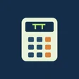
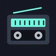
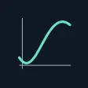
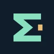
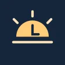
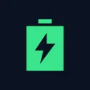
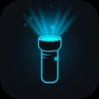
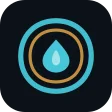
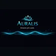
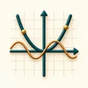

EXPLORE THE COLLECTION
Our apps
Explore Android apps for science, sound, creativity and everyday life.

Science & learningScientific Calculator
Scientific calculations, RPN, number bases, constants and unit conversions.
Preparing for testing- Everyday tools
Atomic Clock
Check network time, compare time zones and use a stopwatch or countdown.
In development - Sound & music
Frequency Sound Generator
Generate tones, explore waveforms, run frequency sweeps and export WAV files.
In development - Sound & music
AudioLab
Explore audio locally with spectrum tools, signal generation and file analysis.
In development - Science & learning
Medical Terminology Flashcards
Study medical word parts with flashcards, quizzes and offline practice.
In development - Science & learning
XLab Tools
A screen ruler, digital level, tone generator and sound analysis in one app.
In development - Sound & music
Clear Audio
Shape your sound with clear voice, a 10-band equalizer and local audio playback.
Development APK available - Everyday tools
Spinora
Create colorful decision wheels, spin your options and save the results.
In testing - Sound & music
EarMate
Local soundscapes, a five-band EQ and tools for compatible BLE devices.
In testing - Sound & music
Droplet — Speaker Care
Timed speaker tones, adjustable frequency and a quick sound comparison.
In testing - Sound & music
Prism Player
Offline music, colorful themes, playlists, equalizer and a sleep timer.
In testing - Photo & creativity
GeoStamp Camera
GPS photo stamps, project albums, street maps and local PDF exports.
In testing  Photo & creativity
Photo & creativityMosaic
Create photo collages with frames, stickers and individual photo adjustments.
In testing Sound & music
Sound & musicTempoLab
Change tempo and pitch, loop sections and separate voice offline.
Preparing for testing
Sound & musicNeon Radio
Internet radio with a retro dial, favorites, equalizer and local recordings.
In testing- Science & learning
CyberSpec
Explore live sensors, Wi-Fi signals, battery health and sound spectra.
In testing  Everyday tools
Everyday toolsTerraLab GPS Tools
GPS, compass, satellites, weather and offline maps for your next journey.
In testing
Science & learningPraxis Graph
Offline graphs, equations, matrices and numerical calculus.
In testing- Sound & music
Praxis Pulse
Local music, expressive visualizers and a 10-band Pro equalizer.
In testing - Sound & music
Nova Radio
Worldwide internet radio, a globe interface, favorites and recordings.
In testing 
Science & learningPraxis Scholar
Scientific calculations, fractions and statistics with familiar key workflows.
In testing- Sound & music
Spectrum Lab
Explore live audio spectra, spectrograms and local measurement sessions.
In testing - Everyday tools
Subscription Planner
Track subscriptions, mark payments and plan upcoming recurring costs.
In testing 
Everyday toolsDaylight Clock
Personal clock widgets with sunrise, sunset and daylight at a glance.
In testing
Everyday toolsBattery Pulse
Live battery readings, local history, widgets, alerts and clear reports.
In testing- Everyday tools
Praxis Clean
Review storage, select photos in a grid and manage recoverable local trash.
In testing - Sound & music
Frequency Studio
Synthesize tones, mix oscillators, explore sweeps and export stereo WAV audio.
In testing - Games
GraviDraw Test
Draw ramps and guide falling balls to the receiver in an offline physics puzzle.
In testing  Games
GamesWheelMind Trivia
Spin the wheel, collect sigils and explore six trivia categories offline.
In testing
Everyday toolsLuminaPro
LED torch, screen light, Morse, timers and custom light patterns.
In testing
GamesFlowistry
Sort colors, plan each pour and explore a calm offline puzzle game.
In testing
Sound & musicAURALIS
Offline pure tones, binaural sound sessions and a four-layer mixer.
In testing- Games
QuestMind
Explore 100 offline levels with seven brain-teasing puzzle mechanics.
In testing 
Everyday toolsMathViz Pro
Explore graphs, animated parameters, tables and mathematical ideas offline.
In testing